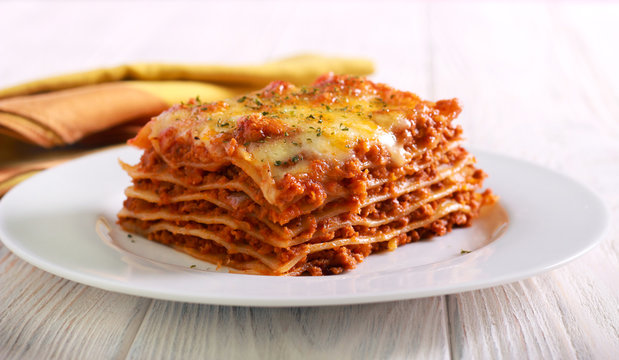

Lasagna
Home

Lasagna is an Italian baked pasta dish made by layering flat pasta sheets with sauces, cheese, and optional meats or vegetables.
- Pasta: Wide, flat sheets (traditionally lasagne), which may be boiled first or used oven-ready.
- Sauces: A rich meat or tomato ragù (such as ragù alla bolognese) and/or creamy béchamel sauce.
- Cheeses: Ricotta, mozzarella, and grated Parmigiano-Reggiano (common in American-style versions); béchamel and Parmigiano-Reggiano are classic in northern Italian versions.
- Fillings: Ground beef, pork, or sausage; spinach, mushrooms, zucchini, or eggplant.
- Prep sauces, fillings, and cheese mixtures.
- Spread a thin layer of sauce on the bottom of a baking dish to prevent sticking.
- Alternate layers of pasta, sauce, and cheese, finishing with sauce and shredded cheese on top.
- Cover with foil and bake at around 350°F–375°F (175°C–190°C) until hot and bubbling, then uncover near the end to brown the cheese.
- Rest for 10–15 minutes before slicing so layers hold their shape.